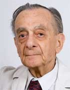
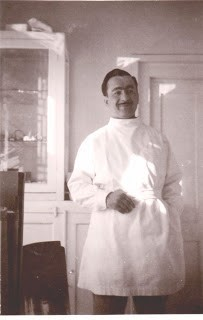
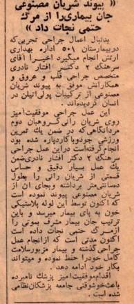

دکتر غلامرضا افشار نادری
در مرداد ماه 1302 در مشهد به دنیا آمد. او تحصیلات ابتدایی و متوسطه خود را در مشهد به پایان رسانید و در سال 1329 از دانشکده پزشکی تهران فارغ التحصیل شد.
دکتر افشار نادری در سال 1336 برای کسب تخصص در جراحی قلب و عروق به پاریس رفت و با پایان دوره تخصص و پس از چند سال کار و تجربه زیر نظر استادان عالی رتبه جراحی در بیمارستان های فرانسه در سال 1340 به تهران بازگشت. او پس از یک دهه طبابت در تهران و انجام عمل های جراحی که در آن زمان بی سابقه بود به لندن رفت و در بیمارستان ملی قلب زیر نظر پرفسور "راس" کار کرد و همزمان در بیمارستان های پاریس : مرکز پژوهش های علمی و مرکز کالبد شکافی برای بهینه سازی روش های جراحی فعالیت داشت.
دکتر غلامرضا افشار نادری از جمله پیش کسوتان جراحی قلب و عروق در ایران است . او مدال طلای "رازی" و نشان "ابن سینا" را پس از جراحی موفقیت آمیزی که برای نخستین بار در ایران و خاور میانه انجام داده بود دریافت کرد.
او علاوه بر مقالات، بیش از 25 رساله و کتاب در زمینه های مختلف علمی و پزشکی، و نیز کتاب هایی در زمینه اجتماعی و تاریخ و غیره منتشر کرده است. از جمله:
- تاریخ تفتیش عقاید در آمریکا و اروپا
- تاریخ دوران صفویه
- نادر شاه ، آخرین کشورگشای آسیا
او بانی و موسس موسسه فرهنگی – هنری پندار که در سال 1381 فعالیت خود را شروع کرد نیز بوده است.
دکتر غلامرضا افشار نادری در غروب سه شنبه 14 آبان 1387 در سن 85 سالگی در بیمارستان 502 ارتش تهران، بیمارستانی که زمانی ریاست بخش قلب آن را بر عهده داشت، در گذشت.
روانش شاد و یادش ماندگار باد!


فهرست رساله ها و تالیفات دانشگاهی دکتر غلامرضا افشار نادری
رساله ها:
- رساله ای به فارسی با عنوان «آزمایش با پروستیگمن در آبستنی» 1328-1329
- رساله ای با عنوان Greffes d'arteres dans les arterites des membres inferieurs. Faculte de medecine de Paris. 1959
مقالات علمی:
- عمل بلالوک یا پوتس در درمان تترالوژی فالو. مجله پزشکی و جراحی ایران، شماره سوم، دوره ششم. مرداد و شهریور1340.
- هیپوترمی مدره. مجله پزشکی و جراحی ایران، شماره سوم، دوره هفتم. مرداد و شهریور 1341.
- جراحی آرتریت های اندام تهتانی. مجله پزشکی و جراحی ایران، شماره چهار، دوره هفتم. 1341.
- سمپاتکتومی پشتی فوقانی از راه زیر بغل. مجله پزشکی و جراحی ایران، شماره اول، دوره هشتم. 1342.
- ارتباطات بین دهلیزی. مجله پزشکی و جراحی ایران، شماره سوم، دوره هشتم. 1342.
- مساله پروتزهای میترال. مجله پزشکی و جراحی ایران، شماره ششم، سال نهم. 1343.
- پیوند شریان. نامه دانشکده پزشکی. شماره سوم. سال بیست و دوم. 1343.
- راجع به هفت مورد بیماری رینو نزد مردان. مجله پزشکی و جراحی ایران، شماره سوم، سال چهاردهم. 1348.
- ترجمه: انسان شناسی زیست شناختی. ماری کلود شامل. نشر گستره. چاپ اول 1367.
کتاب های عمومی ترجمه و تالیف دکتر غلامرضا افشار نادری
کتاب های عمومی: پزشکی، اجتماعی و تاریخی:
- دیباچه ای بر تاریخ تفتیش عقاید در آمریکا و اروپا، نشر زرین، چاپ اول. 1368
- شناخت و درمان درد. نشر گستره. 1369
- تاریخ پیدایش و تکامل جراحی. انتشارات و آموزش انقلاب اسلامی. 1369
- کشورهای رو به توسعه. انتشارات و آموزش انقلاب اسلامی. 1369
- سرشت شناسی آگاهی. نشر صدوق. 1370
- چهره شناسی و ویژگی های فردی. نشر صدوق. 1370
- ریتم های زیست شناسی. انتشارات علمی فرهنگی. 1370
- مرزهای دانش (جلد نخست) نشر صدوق 1372
- خواب راحت زندگی بهتر.
- 101 پاسخ به آلرژی. نشر آذرخش. 1373.
- نادر شاه، آخرین کشورگشای آسیا. دستان 1377
- نقاط شفا بخش. نشر گستره. 1380
- جنگ های مذهبی. واژه آرا. 1381.
- یکی بود یکی نبود. ترجمه داستان هایی از هزار و یک شب. نشر پتدار نو. 1383
- نقد و بررسی تاریخ صفویان. نشر پندار نو. 1385.
- ملسیات، برگزیده اشعار شاعران. نشر پندار نو. 1386

سگ شماره چهار
(سگ شماره چهار) عنوان مقاله ای است که در روزنامه اطلاعات یکشنبه 13 اردیبهشت 1343 – شماره 11376، به چاپ رسیده است. در خاطرات دکتر غلامرضا افشارنادری از عمل جراحی که برای اولین بار در ایران صورت گرفته یاد می شود. در زیر، متن گزارش روزنامه اطلاعات در ارتباط با این عمل را می خوانید. تصویر سگ عمل شده نیز در کنار مقاله چاپ شده است.
با شریان پیوند زده قلب خود یازده روز است که زندگی می کند
پیوند شریان در خارجه بی سابقه نیست اما این عمل در ایران تازگی دارد.
در اطلاعات روز پنجشنبه اطلاع دادیم که برای اولین بار در ایران شریان آئورت یک سگ پیوند زده شده و سگ زنده مانده است.
در ایران سابقه ندارد
خبرنگار ما گزارش می دهد: یازده روز قبل توسط یک تیم جراحی قلب و عروق زیر نظر آقای دکتر سرهنگ افشار نادری برای اولین بار در ایران شریان "آئورت" (بزرگ ترین شریان قلب) یک سگ به عنوان آزمایش پیوند زده شد. آقای دکتر افشار نادری در باره این عمل موفقیت آمیز امروز به خبرنگار ما گفت:
گرچه در حال حاضر این عمل در کشورهای پیشرفته روی انسان صورت می گیرد ولی عمل آن در ایران تا کنون بی سابقه بوده است. برای بررسی امکان عمل با وسایل موجود در ایران اولین بار عمل پیوند عروق، بخصوص شریان آئورت روی یک سگ انجام شدو در حال حاضر یازده روز است این سگ که به نام سگ شماره 4 خوانده می شود زنده است و حالش کاملا خوب می باشد. این عمل در شرایط هیپوترمی (پایین آوردن درجه حرارت) انجام شده است و چنانچه نتیجه عمل قطعی شود روی انسان انجام خواهد شد.
آقای دکتر افشار نادری گفت: هدف نهایی از این قبیل آزمایش ها فراهم کردن زمینه برای تعویض قلب و ریه می باشد و مسلما موفقیت روی پیوند شریان ها این زمینه را فراهم می سازد. وی افزود: در حال حاضر روی نارسایی شریان های بیماران عمل های رضایت بخشی صورت می گیردو امید است تیم جراحی قلب و عروق بیمارسان شماره یک ارتش این موفقیت را پیدا کند که پیوند شریان ها را روی انسان برای اولین بار در ایران انجام دهد.
صبح امروز، خبرنگار بهداشتی ما به اتفاق آقای دکتر افشار نادری از سگ عمل شده بازدید کرد. این سگ در محل مخصوصی نگهداری می شود و وضع مزاجی او کاملا مساعد است.
گوشه ای از خاطرات دکتر غلامرضا افشار نادری
دکتر افشار نادری شرح حالی از خود به جا گذاشته که در آن، از روزگار کودکی و بزرگ سالی، از دوران تحصیل و کار، و از فعالیت های زمان بازنشستگی خاطرات بسیاری روایت کرده است. ما، در این جا، گوشه ای از نوشته های او را که به خاطرات پزشکی اش در دوران اشتغال در بیمارستان های ارتش، پس از بازگشت از فرانسه، مربوط می شود (سال های 1340-1345) و می تواند برای خوانندگان جالب توجه باشد، نقل می کنیم.
[...] من در بیمارستان شماره یک، شروع به اعمال جراحی قلب و عروق کردم. اعمالی که تا آن هنگام در کشور متداول نبود برای تشخیص و درمان بیماری های قلب و عروق و فشار خون انجام دادم که از میان آن، عکس برداری با ماده حاجب از عروق کلیه ها به طور انتخابی با گذراندن سوزن از ناحیه کمر پشتی و تزریق ماده حاجب در آئورت برای تشخیص نارسایی عروق کلیوی در درمان فشار خون و عکس برداری از شریان آئورت برای تشخیص بیماری های آئورت و نظایر آن. کمی بعد در جلسه شورای بهداری ارتش تقاضا کردم مبلغی در اختیار من گذاشته شود تا وسایل انجام هیپوترمی مودره که عبارت از پایین آوردن درجه حرارت بیمار برای انجام عمل جراحی کوتاه مدت قلب و در اروپا و آمریکا متداول بود تهیه کنم.
مغزهای متحجر امرای بهداری ارتش که با هر نوع نوآوری مخالف بودند بنای ناسازگاری گذاشتند. در این هنگام، سپهبد دکتر ایادی از من پرسید چه مبلغ کافی است. من گفتم برای شروع کار پانصد تومان کفایت می کند. ایشان از جیب خودش پانصد تومان روی میز گذاشت و به من گفت: بردار. من مردد بودم که پول را بردارم، لذا از ایشان پرسیدم که بردارم؟ ایشان هم تاکید کردند که بردارم. من پول را برداشتم و به سرعت از بهداری خارج شدم و بلافاصله آن را برای خرید وسایل خرج کردم و فاکتور خرید آن را از فروشنده دریافت کردم و تسلیم بهداری کردم. اما پس از رسیدن به بیمارستان شماره یک، رئیس بهداری تلفن کرد که پول تیمسار ایادی را برگردانم. من هم گفتم با اجازه ایشان آن پول را خرج کرده ام و فاکتور خرید را هم تسلیم بهداری کرده ام. بعدها شنیدم که بهداری پانصد تومان تیمسار ایادی را به ایشان مسترد کرده است.
بعد از این واقعه، در اتاقی که در گوشه ای از بیمارستان شماره یک در اختیار من گذاشته شده بود جراحی تجربی را با هیپوترمی روی سگ آغاز کردم. نظر من این بود که چون در بعضی بیماری های قلب، شش ها تیز آسیب می بینند، به طوری که ترمیم ضایعات قلب برای نجات جان بیمار کافی نیست و بیماران پس از ترمیم ضایعه قلب تلف می شوند، راهی و روشی برای پیوند قلب و ریه پیدا کنم؛ به علاوه گروه ما برای چنین اعمالی ورزیدگی پیدا کند. اولین سگ شفا یافته ما به نام سگ شماره [چهار] شهرت یافت. روزنامه اطلاعات مصاحبه ای با من انجام داد و هدف من را از انجام این آزمایشات و تصویر سگ شماره چهار را در شماره 11376، یکشنبه 13 اردیبهشت ماه 1343 چاپ و منتشر کرد.
استادان محترم دانشگاه تهران به ستاد ارتش شکایت بردند که این پزشک شما آبروی پزشکان را برده است. سازمان ضد اطلاعات ارتش در اداره بهداری نیروی زمینی مرا احضار کرد و سروان یغمایی مسئول ضد اطلاعات به من اظهار کرد که مصاحبه شما با خبرنگار روزنامه اطلاعات در محیط نظامی خلاف قانون بوده است و توضیحاتی در باره کار من خواست. در پاسخ به ایشان، من اظهار کردم که عمل جراحی تجربی در بیمارستان شماره یک انجام گرفته است، ولی مصاحبه در خارج بیمارستان ارتش و در محیطی که سگ مذکور نگهداری می شده به عمل آمده و این کار را هم برای اعتلای نام بهداری ارتش و پزشکان آن انجام داده ام. پاسخ من مامور ضد اطلاعات را قانع کرد، اما هنگامی که خواستم بهداری ارتش را ترک کنم، رئیس بهداری، سرلشکر دکتر شمس مرا احضار کردو به محض دیدن من اظهار داشت: بگو من مصاحبه نکرده ام. من در پاسخ به ایشان گفتم: من به سازمان ضد اطلاعات گفته ام که من مصاحبه کرده ام و این کار را برای اعتلای نام بهداری ارتش و پزشکان آن انجام داده ام.
چند روز بعد، دکتر شمش به بیمارستان شماره یک آمد و به بهانه این که سگ نجس است و نباید در بیمارستان از این اعمال انجام گیرد بساط ما را در هم ریخت.
در این جا باید توضیح دهم که عمل پیوند قلب و ریه را که برای اولین بار من برای درمان بیماران مطرح کرده بودم، سال ها بعد جراحان کشور چین انجام دادند. ظاهرا روزنامه [خبرگزاری] آسوشیتید پرس هم در لندن ذکری از این اقدام موفقیت آمیز من کرده بود.
قبلا هم یکی از مجلات فرانسه عکس مرا در حین عمل جراحی چاپ کرده بود. تلویزیون ایران هم مصاحبه ای در باره بیماری های مادرزادی قلب با من انجام داد.

به این ترتیب، نام من بر سر زبان ها افتاد و بهداری نیروی زمینی، با پیشنهاد من، اقدام به ساختن مرکزی برای درمان طبی و جراحی قلب و عروق و تاسیس آزمایشگاه و بخش رادیولوژی مجهز ی برای کاردیوآنژیوگرافی کرد. بخش جراحی ریه نیز ضمیمه این سازمان شد و من برای ادامه کارم به این مرکز که در بیمارستان شماره 2 (502) ارتش ایجاد شده بود منتقل شدم و با سمت رئیس بخش جراحی قلب و عروق شروع به کار کردم.
در این جا لازم است که دو خاطره به یاد ماندنی را یادآور شوم:
- در یکی از روزهای تابستان، به اتفاق همسر و فرزندانم و برادرم فریدون میرزا به دماوند رفته بودیم و قرار بود یکی دو روز در آنجا بمانیم. اگر درست به خاطر داشته باشم، عصر روز جمعه سیمین [همسر دکتر] از ورم و درد دست یا انگشت اظهار ناراحتی کرد. در نتیجه، قرار شد به تهران مراجعت کنیم تا از دست سیمین عکس برداری کنیم. چون من شب ها رانندگی نمی کنم، فریدون پشت رل نشست و ما را به تهران بازگرداند.
صبح روز بعد، چون من هنوز در بیمارستان شماره یک کار می کردم، برای رادیوگرافی از دست سیمین به بخش رادیولوژی مراجعه کردیم. هنوز عکس برداری از دست سیمین به پایان نرسیده بود که من متوجه سربازی شدم که رادیوگرافی از فقسه سینه بیماری را در دست داشت و به طرف اتاق عمل می دوید. من از او خواستم رادیوگرافی را به من نشان بدهد.در رادیوگرافی تصویر قلب بیمار نشانه ای از ورود مایع در پرده قلب (پریکارد = پاشام قلب) دیده می شد. لذا من به سیمین گفتم: تو به خانه برگرد تا من ببینم ماجرا از چه قرار است.
وقتی به سرسرای اتاق عمل رسیدم، دکتر نیری که رئیس بخش جراحی عمومی بود اظهار داشت سرباز حین تمرین نظامی به زمین خورده و از تفنگ خود برای جلوگیری از سقوط استفاده کرده است. سرباز پشت سر او که در حال دویدن بوده روی سرنیزه سرباز جلویی افتاده و سرنیزه در ناحیه بالای ناف وارد شکم او می شود. سرباز بلافاصله به بیمارستان شماره یک متنتقل می شودو چون نبض و فشار خون او خیلی ضعیف و پایین بود، بیمار را روی تخت عمل در وضعیت سر پایین قرار داده و از هر چهار دست و پا به او سرم و خون تزریق می کردند. من به سرعت از بیمار یک نوار قلب (الکتروکاردیوگرافی) تهیه کردم و به دکتر نیری و دستیارانش گفتم شما شکم بیمار را باز کنید تا من دست شسته آماده برای عمل شوم. چند لحظه بعد، جراحان اطلاع دادندکه سرنیزه معده را سوراخ کرده، از دیافراگم (پرده عضلانی که قفسه سینه را از حفره شکم جدا می کند) گذشته است. من هم به نوبه خود به سرعت قفسه سینه بیمار را باز کردم. خون ریزی در داخل پریکارد جلب نظر می کرد. پرده پریکارد را شکافتم. برشی به طول دو سانتی متر حفره بطن راست قلب را به خارج مربوط می کرد. بلافاصله برای جلوگیری از ادامه خون ریزی با انگشت دست چپ محل بریدگی را مسدود کردم و سپس با دقت محل زخم را بخیه کردم. حفره پریکارد و جنب از خون پاک شد؛ دوختن معده و سوراخ دیافراگم و بستن شکم توسط دکتر نیری و بستن قفسه سینه توسط من به پایان رسید.
این بیمار کاملا بهبود یافت و من او را در کنفرانس های دانشکده پزشکی برای پزشکان و دانشجویان معرفی کردم. بعدها، از طرف بهداری نیروی زمینی، برای این عمل موفقیت آمیز، نشان علمی ابن سینا برای من تقاضا شد که مورد موافقت قرار گرفت.نکته جالب این که در نوار قلب، قبل از عمل، نشانه ای از بریدگی ماهیچه قلب راست دیده نمی شد، اما در نواری که پس از بهبود بیمار از قلب او گرفته شد، نشانه نکروز (تباهی عضله) در قلب راست مشهود بود.

-خاطره دوم مربوط به درجه داری است که در تبریز، حین ورزش رزمی، شریان رانی اش توسط سرنیزه حریف پاره شده بود. فرد مصدوم که مشاهده می کند خون از کشاله رانش فوران می کند با فشار دست روی شریان رانی مانع ادامه خون ریزی می شود. این فرد توسط راه آهن به تهران منتقل می شود و در تمام طول مسافرت با فشار دست از خون ریزی جلوگیری می کند. پس از بستری کردن و انجام آرتریوگرافی (عکس برداری از شریان با ماده حاجب) از طریق شریان پای دیگر، بیمار را تحت عمل جراحی قرار دادم. ده سانتی متر از شریان آسیب دیده را برداشته و با پیوند شریان مصنوعی از جنس داکرون ارتباط و جریان خون را برقرار کردم.
این عمل پیوند شریان مصنوعی [برای] اولین بار در خاورمیانه انجام گرفته بود. من بیمار را به بیمارستان فیروزگر معرفی کردم. ازدحام پزشکان در سالن کنفرانس به حدی بود که جایی برای نشستن باقی نمانده بود و عده ای ناگزیر ایستاده به سخنرانی گوش می دادند. یکی از روزنامه های تهران نیز این خبر علمی را منتشر کرد.
من در حرفه خودم نوآوری ها و اعمال شگفتی آفرین دیگری هم داشتم؛ اما این دو مورد، یکی از لحاظ تصادفی که مرا از دماوند برای نجات جان بیمار به تهران کشاند و دیگری از این نظر که بیماری با مقاومت و پایداری مانع از مرگ آنی خود شد، تا این که با عمل جراحی من، هم جانش و هم پایش نجات یافتند، شایان ذکر بودند.
مدارک پزشکی و شرح عمل بعضی از بیماران جالب در پرونده هایی در مطب من نگهداری می شوند، اما ذکر یکایک آنها برای خوانندگان غیر حرفه ای خسته کننده خواهد بود.
مراجعه کنندگان به من بیمارانی بودند که به علت تشخیص های ضد و نقیض دیگران دچار سردرگمی شده بودند و برای تعیین تشخیص قطعی و درمان مناسب به من مراجعه می کردند و یا بیمارانی بودند که پزشکان دیگر دست رد به سینه آنها زده بودند. این بیماران اغلب توسط همان پزشکان به من معرفی می شدند؛ و یا آشنایان آنها، به عنوان آخرین تلاش، آنها را به من معرفی می کردند.
دو نمونه از این بیماران یکی خانمی بود مبتلا به تنگی دریچه میترال که دکتر هوشنگ نهاوندی عمل جراحی وی را کشنده و خطرناک دانسته بود. این بیمار را من در بیمارستان بازرگانان عمل کردم و پس از بهبود او دکتر نهاوندی را برای معاینه بیمار فرا خواندم.
بیمار دیگر مبتلا به سرطان پیشرفته غده تیروئید بود. اعمال جراحی در بیمارستان های دانشکده پزشکی بر روی تیروئید او انجام گرفته بود و پیشرفت سرطان تمام قسمت جلویی گردن بیمار را خورده بود. دست اندازی سرطان به مری بیمار مانع از تغذیه او می شد، به طوری که بیمار که مدتی نتوانسته بود غذا بخورد با سرم تغذیه می شد. در ضمن، هیچ گونه بیهوشی برای بیماری با این وضع عمومی خراب ممکن نبود.
این بیمار را دوستان، چون مهارت مرا در جراحی تیروئید دیده بودند، البته با حسن نیت (!؟)، به من معرفی کردند. من هم فورا بیمار را به اتاق عمل منتقل کردم و در مقابل چشمان شگفت زده همکاران، با بی حسی موضعی، عمل "گاستروسکتومی" را بر روی او انجام دادم. در این عمل، با گذشتن از برش کوچکی در جدار شکم، و ایجاد سوراخی در معده بیمار، لوله مخصوص تغذیه بیمار را به جدار معده و شکم ثابت کردم تا بیمار از این طریق تغذیه شود و دست کم از گرسنگی تلف نشود. در اینجا لازم است که یادآور شوم، هیچ جراح دیگری حاضر نشده بود کمکی به این بیمار بکند.